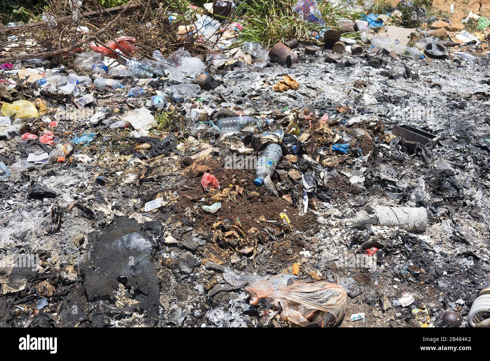
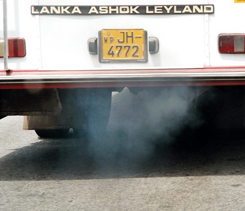
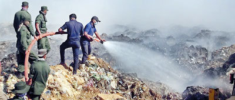

Environmental Issues
This page details the local environmental issues, including pollution, waste management problem, and other challenges affecting the Badulla area.
Badulla, which is situated in Uva province, Sri Lanka is still a growing town that is 230KM away from Colombo(link below). Badulla town which was once an isolated village had grown into a multi-national city. It is a very beautiful area with some of the best scenic routes in Sri Lanka. But like with any modernizing city with changes comes problems. Eventhough Badulla is situated in an area almost surrounded by mountians, There are still ways for pollution to sneak in.
Badulla isn't a city that's been subjected to indrustialization just yet. Even then there are still ways of polluting the environment. In Badulla the most obivous one would be air pollution. Be it from the vehicles smokes or from the trash, people burn in their backyards. One of the best examples for this was a disaster that struck Badulla in 2016. 5 acres of trash mound dried up and got caught in fire. Which led to shutting down of eight schools temporarily, And also a massive amount of patients that inhaled the smog.
Now there are proper measures taken to avoid this kind of mistakes. And the waste is managed properly. But the damage done to the environment is irreversible now. And with the amount of smoke from vehicles it will be only escalating. So there is a urgent need for action that can't be put to the future.
Please click here if you want to know more about BadullaPlease click here if you want to know more about the smog
  